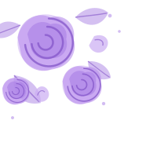
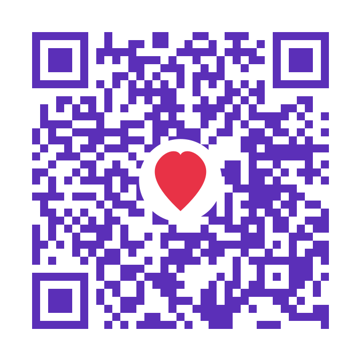
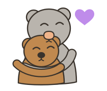

« Certaines personnes rendent la vie plus belle
simplement en étant là… Et toi, tu es l'une d'elles. »
Merci d'être toi…
et d'occuper une place si spéciale dans mon cœur.
Aujourd'hui est un jour particulier, parce que c'est le jour où une personne qui compte énormément pour moi est née.
Alors avant toute chose, je veux te souhaiter un très joyeux anniversaire. 💜
J'espère sincèrement que cette nouvelle année de ta vie t'apportera de très belles choses. Je te souhaite le bonheur, la réussite, la paix, de réaliser tes rêves et de rencontrer sur ton chemin tout ce que tu mérites. Et lorsque toutes ces belles choses arriveront, j'espère que tu réaliseras à quel point tu mérites chacune d'elles.
Mais aujourd'hui, je ne voulais pas seulement te souhaiter un joyeux anniversaire. Je voulais profiter de cette occasion pour te dire quelque chose que je ne sais peut-être pas toujours exprimer avec des mots.
Je parlerai de la douceur que tu mets dans ma vie, de cette chaleur que je ressens lorsque tu me tiens la main, de ce battement de cœur qui semble se caler sur le tien lorsque tu es près de moi.
Je parlerai de ton prénom qui, à lui seul, suffit parfois à changer mon humeur. De ta voix qui possède quelque chose capable de m'apaiser, même lorsque je ne vais pas bien. Je parlerai de ta présence qui transforme les endroits les plus ordinaires en souvenirs que j'ai envie de garder toute ma vie.
Parce que tu ne réalises probablement pas l'effet que tu as sur moi. Tu me fais du bien. Beaucoup plus que tu ne l'imagines.
J'aime quand tu te confies à moi. J'aime quand tu t'inquiètes pour moi. J'aime ton côté protecteur. J'aime tes mots doux. J'aime tes yeux qui s'illuminent lorsque tu me vois. J'aime nos discussions, nos délires, nos fous rires et même nos petits moments de silence. Et j'aime par-dessus tout être avec toi.
Il y a tellement de petits détails chez toi que j'aime, et pourtant aucun mot ne me semble vraiment suffisant pour expliquer ce que je ressens. Tu es extraordinaire sans même t'en rendre compte. Et peut-être que c'est justement ça que j'aime le plus chez toi.
T'avoir dans ma vie est l'une des plus belles choses qui me soit arrivée. 💜
Ma mère m'a toujours dit de choisir un bon cœur plutôt qu'un beau visage… mais j'ai l'impression que Dieu avait déjà décidé de faire les choses à sa manière, puisqu'il t'a donné les deux. 🥹💜
Je ne sais pas exactement ce que l'avenir nous réserve. Je ne veux pas forcément d'une histoire parfaite, parce que je sais que la perfection n'existe pas. Je veux simplement une histoire sincère. Une histoire avec des fous rires, des souvenirs, des moments simples, peut-être quelques disputes aussi, parce que nous sommes humains… mais surtout une histoire dans laquelle nous continuons à nous choisir, à nous comprendre et à avancer ensemble.
Je t'ai choisie sans hésiter, et chaque jour mon cœur me confirme que j'ai fait le bon choix. 💜
Et même si aujourd'hui nous n'avons pas encore donné de nom à tout ce que nous sommes, je veux que tu saches que ce que je ressens pour toi est réel. Je sais que j'aime ce que nous vivons aujourd'hui. J'aime les souvenirs que nous avons déjà créés et j'ai envie d'en créer encore beaucoup d'autres avec toi.
Et je crois que c'est justement ça qui rend certains sentiments si beaux : ils n'ont pas besoin d'être précipités pour être sincères.
Je ne veux pas forcer le temps ni chercher à tout définir immédiatement. J'ai simplement envie de laisser les choses évoluer naturellement, à notre rythme.
J'attendrai le temps qu'il faudra, parce que certaines histoires ne méritent jamais qu'on baisse les bras.
Je ne sais pas ce que le destin nous réserve, ni quelles routes nous emprunterons demain. Mais je refuse de laisser mourir l'espoir de voir notre histoire devenir quelque chose d'encore plus beau.
Tant qu'il restera une place pour toi dans mon cœur, elle t'appartiendra. Aujourd'hui comme demain. 💜
Il y a quelque chose d'unique dans le fait de penser à une personne sans rien attendre en retour. Je pense à toi lorsque je vois quelque chose qui aurait pu te faire sourire. Lorsque je découvre un endroit où j'aurais aimé t'emmener. Lorsque j'entends une chanson qui me fait penser à toi. Lorsque la journée devient particulièrement douce et que, sans même m'en rendre compte, j'aimerais pouvoir partager cet instant avec toi.
Je ne cherche pas à retenir ces pensées. Je les laisse simplement venir, avec un sourire. Parce que certains sentiments sont tellement sincères qu'ils n'ont pas besoin de posséder pour exister.
Et toi, tu es devenue l'une de ces personnes auxquelles je pense naturellement, simplement parce que ta présence dans ma vie a une valeur particulière pour moi.
Alors, en ce jour qui est le tien, je veux simplement te rappeler une chose :
Je suis reconnaissant pour ta présence dans ma vie, pour tous les moments que tu m'as offerts, pour les sourires que tu as provoqués et pour cette place particulière que tu occupes dans mon cœur.
Je te souhaite le plus beau des anniversaires. 💜🎂 Que Dieu te protège, te guide, t'accorde la santé, la réussite et tout ce que ton cœur désire. Continue d'être cette personne extraordinaire que tu es.
Et si un jour tu oublies à quel point tu es spéciale, relis simplement cette lettre. Parce qu'elle est là pour te rappeler ce que tu représentes pour moi.
Je t'aime énormément. 💜
Et peut-être qu'un jour, lorsque nous repenserons à cette période de notre histoire, nous sourirons en nous disant que tout avait commencé par deux personnes qui s'aimaient déjà, avant même de savoir exactement comment appeler ce qu'elles ressentaient.
Joyeux anniversaire, mon cœur. 💜🎂


Merci d'être toi…
Tu es ma personne préférée,
aujourd'hui, demain et toujours.
Avec tout mon amour,